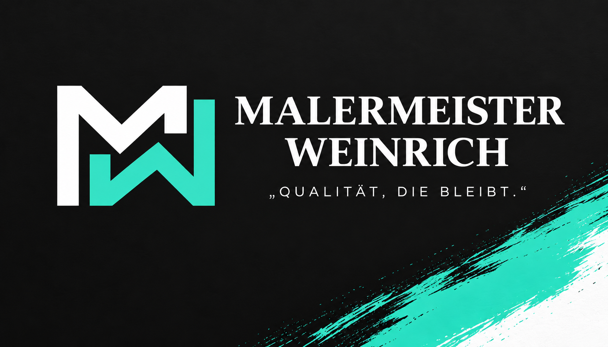

Malerarbeiten innen
Wände, Decken, Renovierungen und hochwertige Beschichtungen.

Malermeister · München & Umgebung
Persönlicher Maler- und Lackierermeisterbetrieb für München und Umgebung. Zuverlässig, hochwertig und direkt aus einer Hand.
Leistungen
Wände, Decken, Renovierungen und hochwertige Beschichtungen.
Fassadenanstriche und Außenarbeiten.
Türen, Zargen, Heizkörper und weitere Oberflächen.
Raufaser, Vliestapeten und Akzentflächen.
Glatte und hochwertige Untergründe.
Saubere Verlegung geeigneter Bodenbeläge.
Bearbeitung betroffener Flächen und passende Beschichtungen.
Wände, Decken und kleinere Ausbauarbeiten.
Über mich
Ich bin Mahzuni Weinrich, Malermeister und Ihr direkter Ansprechpartner.
Ich lege Wert auf saubere Ausführung, klare Absprachen und ein Ergebnis, das langfristig überzeugt. Von der Anfrage bis zur Umsetzung sprechen Sie direkt mit mir.